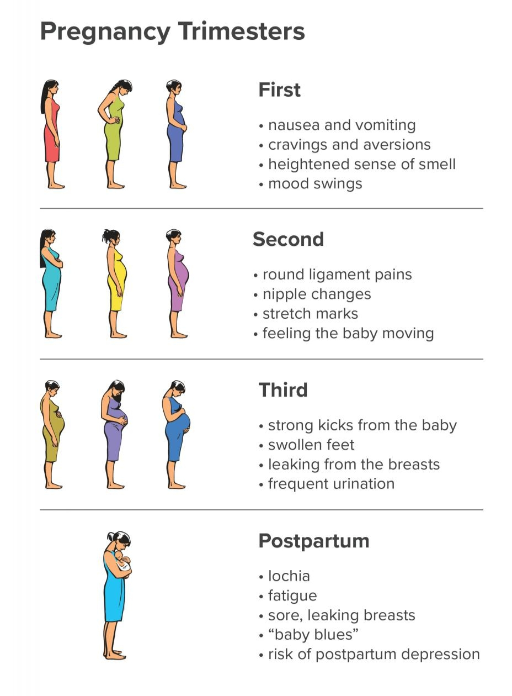

Pregnancy has three trimesters, each of which is marked by specific fetal developments. A pregnancy is considered full-term at 40 weeks; infants delivered before the end of week 37 are considered premature. Premature infants may have problems with their growth and development, as well as difficulties in breathing and digesting.
A full-term pregnancy has three trimesters and lasts around 40 weeks — starting from the first day of the last menstrual period.
In each trimester, the fetus meets specific developmental milestones.
While 40 weeks is the usual time frame, a full-term baby can be born as early as 37 weeks and as late as 42 weeks
The Office on Women’s HealthTrusted Source defines the three trimesters as follows, though the timing can vary:
Some people also talk about a fourth trimester, which is the 3-month transitional period after delivery.
The first trimester is the most crucial to your baby's development. During this period, your baby's body structure and organ systems develop. Most miscarriages and birth defects occur during this period.
Your body also undergoes major changes during the first trimester. These changes often cause a variety of symptoms, including nausea, fatigue, breast tenderness and frequent urination. Although these are common pregnancy symptoms, every woman has a different experience. For example, while some may experience an increased energy level during this period, others may feel very tired and emotional.
At conception, the egg and sperm combine to form a zygote, which implants in the wall of the uterus. The zygote becomes an embryo as its cells divide and grow.
By the end of the first 12 weeks:
A person also experiences many changes during their first trimester of pregnancy.
These includes:
The second trimester of pregnancy is often called the "golden period" because many of the unpleasant effects of early pregnancy disappear. During the second trimester, you're likely to experience decreased nausea, better sleep patterns and an increased energy level. However, you may experience a whole new set of symptoms, such as back pain, abdominal pain, leg cramps, constipation and heartburn.
Somewhere between 16 weeks and 20 weeks, you may feel your baby's first fluttering movements.
By the end of the second trimester, the following will have happened:
Many people feel more comfortable during the second trimester of pregnancy. Morning sickness and fatigue often reduce or disappear.
Meanwhile, new changes take place:
You have now reached your final stretch of pregnancy and are probably very excited and anxious for the birth of your baby. Some of the physical symptoms you may experience during this period include shortness of breath, hemorrhoids, urinary incontinence, varicose veins and sleeping problems. Many of these symptoms arise from the increase in the size of your uterus, which expands from approximately 2 ounces before pregnancy to 2.5 pounds at the time of birth.
Most organs and body systems have formed by now, and they will continue to grow and mature.
During this trimester:
Toward delivery, the fetus drops lower in the person’s abdomen and usually turns head-down.
The growth of the fetus can cause new discomfort at this time.
A person might also experience:
It is also normal to feel anxiety about the delivery and parenthood toward the end of a pregnancy.
The 3 months after delivery play a key role in the health of the person and their baby. Some people call this transitional period a fourth trimester.
While this can be an exciting time, the range of hormonal and environmental changes can pose challenges.
These challenges might involveTrusted Source: